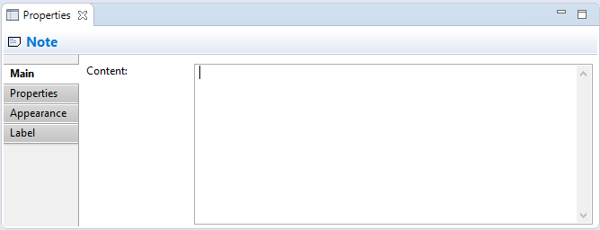
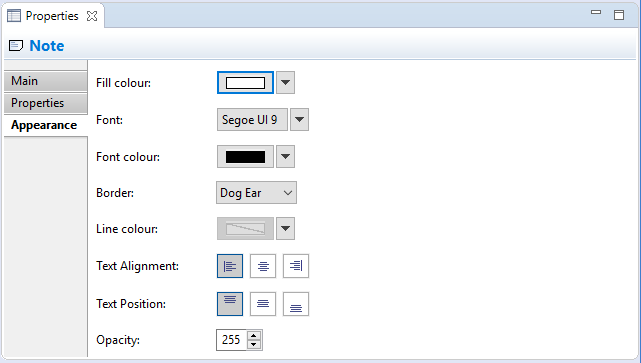

Selecting a Note in a View means that you can edit or view the following properties in the Properties Window.
The Main Tab
Editing the "Main" Properties for a Note
| Content: | The textual content for the Note |
The Appearance Tab
Editing the "Appearance" Properties for a Note
| Fill colour: | Sets the fill colour for the selected element. The "Default" button sets the fill colour to the default setting. |
| Font: | Sets the font used for the text in the selected element. The "Default" button sets the font to the default setting as set in Preferences. |
| Font colour: | Sets the colour of the font used for the text in the selected element. The "Default" button sets the fill colour to the default setting. |
| Border: | Sets the border type. Can be either "Dog Ear", "Rectangle" or "None". |
| Line colour: | Sets the colour of the line used to draw the selected element. The "Default" button sets the line colour to the default setting. If this is disabled it is because line colours are derived from the element's fill colour, as set in Preferences. |
| Text Alignment: | Align text in the selected element to Left, Centred or Right. |